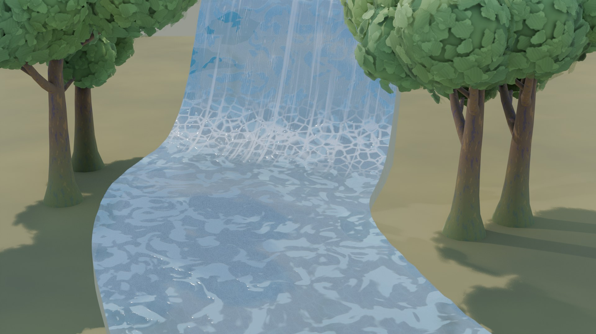
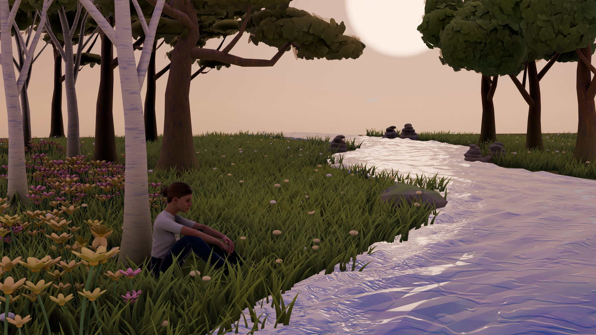
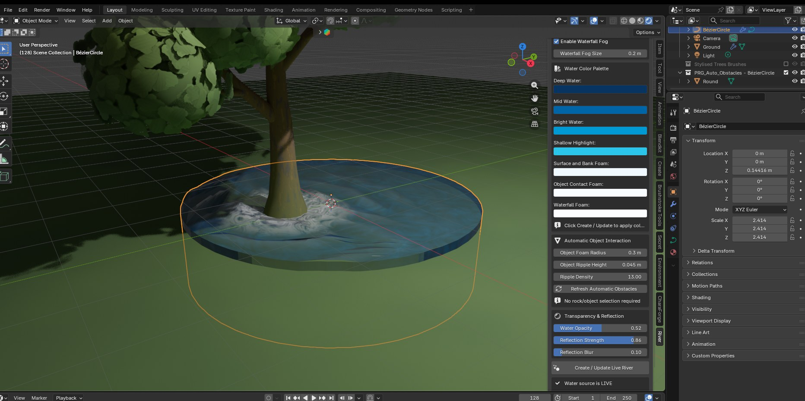

01
Curve-first creation
Draw, reshape and art-direct the water using familiar Blender curves. Closed loops become lakes; open paths become flowing ribbons.
A curve-driven water toolkit for rivers, lakes, wells and waterfalls—with animated flow, intelligent foam and artist-friendly controls.

01 / THE IDEA
Shape an editable curve or mesh. River interprets the form, detects slopes, builds depth, creates the surface and carries every visual detail downstream.

CURVE WATER
Follow any 3D path with animated downstream motion, reflective depth and organic bank foam.
02 / TOOLKIT
Everything stays editable—from the source shape to the generated Geometry Nodes and Shader Nodes.
Draw, reshape and art-direct the water using familiar Blender curves. Closed loops become lakes; open paths become flowing ribbons.
Objects touching water receive close-contact foam and animated ripples—without manual selection or duplicate meshes.
Directional crest foam, connected falling water, plunge-pool detail and compact stylized fog appear where the surface drops.
Control deep water, mids, highlights, surface foam, object foam and waterfall whitewater per source.
Generated materials, Geometry Nodes, flow attributes and modifier inputs remain accessible. Use the default look—or make the system entirely yours.
03 / WORKFLOW
Use an open Curve for streams and rivers, a closed Curve for lakes and wells, or a Mesh for full surface control.
Set width, depth, color, flow, reflections, ripples, waterfall angle, fog and performance for each source.
Reshape the source in Edit Mode. The generated surface, animation, foam and source-specific interactions follow.

04 / INTELLIGENT CONTACT
Every live source owns its own readable obstacle collection. Objects are referenced—not copied—and only influence the water they actually meet.
05 / UNDER THE SURFACE
A production-minded Blender tool with private per-source resources, named attributes and performance controls that scale with camera distance.
WATER CURVE · STYLIZED WATER SYSTEM